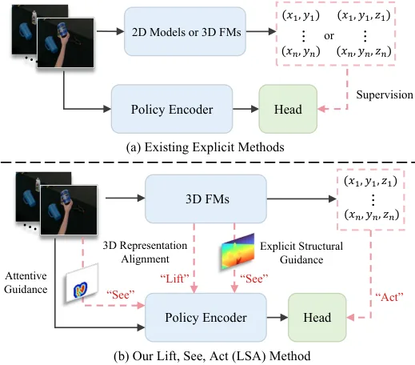
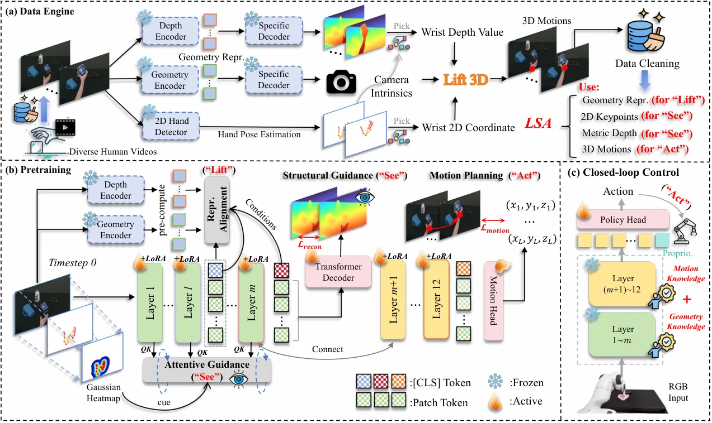
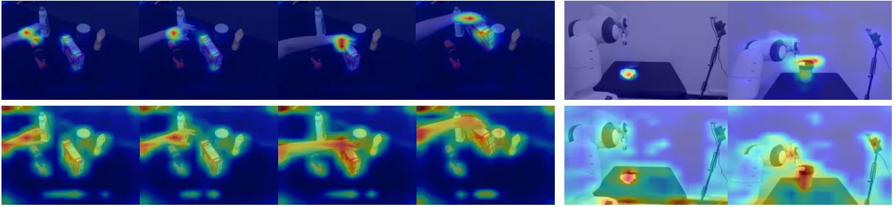
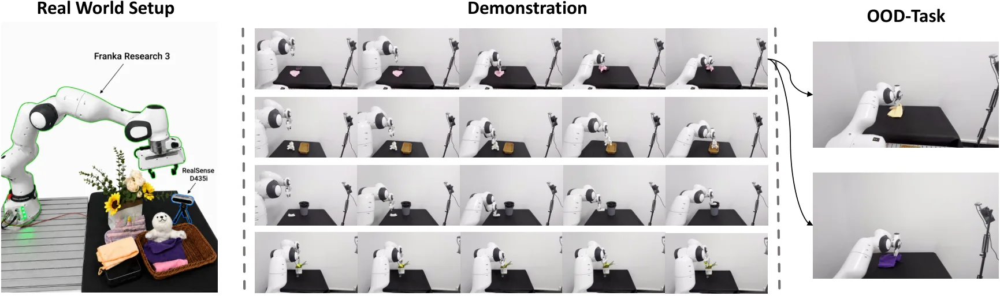
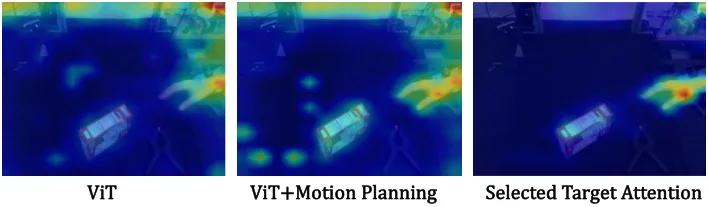
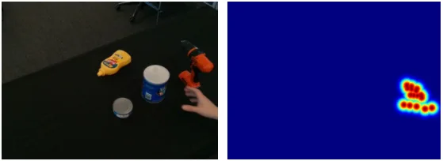

Lift, See, Act：用 3D 基础模型做分层机器人策略预训练
Lift, See, Act: Hierarchical Robot Policy Pretraining with 3D Foundation Models
一句话：不只用手轨迹，而是把 VGGT/Depth Pro 的中间几何特征、深度图和手部注意力都蒸进策略编码器。
success rate
success rate
robustness
作者、单位与技术谱系 · Research context
作者与单位
研究脉络
- HRP / R3M-A / MPI方法上游关系：人类视频/手部先验预训练机器人表征的前作；LSA 从「只用稀疏轨迹」推进到「多层稠密几何」。[LSA 原文 §1–§2]
- Spatial Forcing方法上游关系：把单个 3D 基础模型的稠密几何特征蒸给策略；LSA 扩展为多教师、多层级并加入深度与注意力引导。[LSA 原文 §2]
- VGGT + Depth Pro方法基座关系：分别提供相机内参与米制深度，是 3D 手轨迹和两套几何教师的来源。[LSA 原文 §3.2]
合作网络
- SCUT 校内共同署名Yiyuan Ge → Changxing Ding / Xiangmin Xu关系：共同署名[arXiv 摘要页]
- LSA → VGGT / Depth Pro 技术依赖LSA → VGGT / Depth Pro关系：技术依赖[LSA 原文 §3.2]
- LSA 项目页LSA → yiyuan00.github.io/Lift-See-Act关系：官方项目页[LSA 项目页]
作者与单位来自论文首页；教师模型与项目页来自方法章节和摘要中的公开链接；未发现公开的师生关系证据。
方法本质拆解 · What actually changed
是不是微调？
是从头预训练一个视觉编码器，再冻结它接行为克隆头，不是微调现有 VLA。训练数据是人类视频伪标签加机器人演示，更新的是策略编码器与预测头，VGGT/Depth Pro 只做离线教师、不更新。
有没有额外约束？
有四类约束：浅层 token 与两套几何特征的余弦对齐、深度图 MSE 重建、手部高斯热图引导的注意力自蒸馏、未来 3D 手轨迹的 L1 回归。对齐还加了动态教师权重，避免固定权重压过某一套几何先验。
推理/后端到底做了什么？
推理时没有 3D 基础模型、没有优化，只有冻结的视觉编码器加轻量 BC 头；手轨迹预测头只在预训练阶段使用，部署时直接输出动作。也就是说 3D 知识被蒸进编码器，而不是运行时调用几何模型。
方法本质是什么？
本质是把 3D 基础模型的中间层当作「密集几何教师」，通过特征对齐、深度重建和注意力引导把几何与交互先验压进 2D 视觉编码器。它改变的是人类视频缺少动作相关 3D 表示这一缺口，靠多教师蒸馏和手部区域监督把 2D 特征提升到 3D 感知空间。
输入是人类视频与机器人演示，先用 VGGT/Depth Pro 造 3D 手轨迹和稠密几何教师，再把策略浅层特征对齐到这些教师并加深度/注意力约束；改变的是 2D 编码器缺少 3D 动作表示，最终把几何知识蒸进冻结编码器。

结论与问题Conclusion & Motivation
核心结论
LSA 把人类视频预训练拆成 Lift、See、Act 三段：先把策略浅层特征对齐到 VGGT 与 Depth Pro 的多层几何表示，再用深度重建和手部注意力做显式几何/交互引导，最后预测未来 3D 手轨迹。它在四个 MetaWorld 任务上的平均成功率从无预训练的 73.3% 提到 92.2%，在真机 Franka 四个任务上平均 68.3%，明显高于最强基线 HRP 的 41.7%。核心主张是：3D 基础模型产出的稠密中间表示，比只保留稀疏手轨迹更有价值。
动机与问题
用人类视频预训练机器人策略的关键缺口，是视频没有动作标签，也没有显式的动作相关表示。现有做法要么提 2D 接触点/热图/框，缺少 3D 时序；要么用 3D 基础模型估手部轨迹，但只把最终轨迹当监督，把提取过程中产生的稠密几何特征和深度图全部丢掉。作者认为这些被丢掉的中间层恰好是机器人预测末端 3D 运动最需要的知识，于是要把「多层 3D 知识」显式接进策略编码器。
方法Method
方法总览
数据引擎用 VGGT 估相机内参、Depth Pro 估米制深度，把 2D 腕部坐标提升成 3D 手轨迹，同时保留两个模型的中间特征与深度图。Lift 阶段用两个 MLP 把策略浅层 token 分别映射到两套几何特征，做余弦对齐，并用 CLS token 动态分配两个教师的权重。See 阶段一边用深度重建提供显式结构约束，一边把手关键点做成高斯热图，选出最匹配的注意力头作为自蒸馏目标。Act 阶段用单层 MLP 从全局视觉 token 回归未来 L 帧 3D 手轨迹。
关键技术细节
对齐损失是 token 级余弦相似度，几何特征先降采样到与策略 token 数一致并加位置编码；动态权重由浅层与中层 CLS token 组成 condition query，再与几何 token 做 scaled dot-product 得到。注意力引导只作用于前 R 层：对每个头计算 CLS-to-patch 注意力与手部热图的内积，取最高分头作为目标，对每层平均多头注意力做 Min-Max 归一化后的 MSE，目标侧 stop-gradient。深度重建用第 m 层 patch token 过 transformer decoder 回归 Depth Pro 深度，MSE 监督；整个视觉编码器预训练后冻结，只接轻量 BC 头。

实验Experiments
实验设置
仿真用 MetaWorld 八个任务、DexArt 的 bucket/toilet、Adroit 的 door/hammer/pen，成功率取三个随机种子平均；预训练编码器冻结，只训练行为克隆头。真机用 7-DoF Franka Research 3 加 RealSense D435i，四个日常任务各 30 条演示、每任务 10 次试验，并额外测两种未见毛巾颜色的 Wipe PC。基线与消融覆盖 CLIP、DINOv3、R3M、VC-1、HRP、MPI、R3M-A、VIP、DP3、KAN-We-Flow；鲁棒性测亮度降 40% 和随机彩色圆遮挡。
实验数字与比较
MetaWorld 上 LSA 在 pick-place-wall 为 98.0%、disassemble 92.3%、hand-insert 85.3%，分别高于 DINOv3 的 80.0%、85.0%、75.7%；DexArt 的 bucket 63.9%、toilet 78.3%，也高于 DINOv3 的 26.0%、33.3%。真机平均 68.3% 对 HRP 41.7%，其中 Pick Trash 70.0% 对 40.0%、Place Toy 80.0% 对 60.0%、Wipe PC 80.0% 对 50.0%；两种 OOD 毛巾颜色为 70.0%/60.0%，最强基线只有 20.0%/40.0%。鲁棒性上亮度降低时 LSA 从 92.2% 降到 85.3%（-7.5%），DINOv3 从 82.9% 降到 70.8%（-14.6%）。
消融/失败边界
逐项加组件：无预训练 73.3%，只加运动规划 81.0%，再加表示对齐 85.2%、结构引导 85.8%、注意力引导 86.3%，三者齐全 92.2%，比基线高 18.9 个百分点。只监督 2D 手运动是 77.3%，而在 3D 表示上却用 2D 轨迹目标会崩到 56.3%（-35.9），说明表示空间与监督空间必须一致。教师选择也重要：只用 VGGT 为 89.8、只用 Depth Pro 为 90.3，都低于双教师；去掉动态权重为 89.3。失败边界是伪标签质量：VGGT 深度提升的轨迹会把成功率从 92.2% 拉到 88.6%，换成 DexYCB 真值轨迹只升到 93.5%，说明瓶颈更多在表示与引导而非轨迹标签。
局限与迁移Limitations & Transfer
局限与待核验
作者只明确写了一条：LSA 继承人类视频预训练固有的「人-机具身差」限制，没有展开到具体失效场景。我们的待核验项：真机每任务只有 30 条演示、10 次试验，统计功效有限；仿真只在 13 个任务上评测，DexArt/Adroit 的绝对成功率仍低（63.9/78.3）；论文没有给预训练数据规模、GPU 小时和推理延迟，无法判断 92.2% 的增益有多少来自数据量；深度与手部热图都依赖外部模型，真实场景手部遮挡时注意力目标是否可靠未报告。
与你研究路线的关系
第一个可迁移模块是「多教师稠密特征对齐 + 动态权重」：我们做多传感器融合时，可以把 LiDAR、视觉、IMU 的中间特征当作多个教师，让策略/前端按场景自适应分配权重，而不是固定融合。第二个是「用已知几何做注意力监督」：手部热图在这里扮演了「任务相关区域先验」，类似我们用语义/动态掩码约束特征关注点。下一步最小实验是在我们自己的机械臂数据上，比较「只用手轨迹监督」与「轨迹 + 深度重建 + 区域注意力」三档，固定编码器和 BC 头，报告成功率、OOD 颜色/光照变化和训练成本；再把 VGGT/Depth Pro 换成我们已在用的几何前端，检查伪标签误差如何传导。







